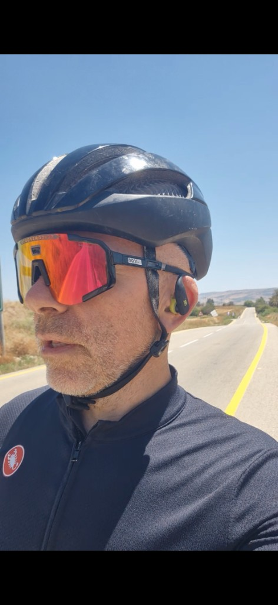

Велопутешествие
Длинные дистанции, седло, шлем и дорога — главный зал без membership fee.
Велопутешествие · YouTube Shorts
Честный дневник километров, солнца и дороги. Не марафон за неделю — а путь день за днём: в седле, у границы, с камерой и без оправданий.
О канале
Канал для тех, кто знает: «начну с понедельника» уже было сто раз. Здесь — реальные километры, жара, ветер и честные кадры с велосипеда. Без магии, с потом и с видом на горизонт.
Длинные дистанции, седло, шлем и дорога — главный зал без membership fee.
Худею не на словах: калории уходят в педали, а прогресс — в shorts и в зеркале.
Короткие вертикальные эпизоды и сквозные серии — один маршрут, много историй.
Текущая серия
Первая серия канала — велодневник у границы. Солнечная дорога, один в кадре, камера на руле и честный рассказ: как километры помогают худеть без фанатизма.

Серия #1Маршрут
Хроника серии — от первых кадров до публикации Shorts.
18 июня 2026
Четыре эпизода с дороги: селфи, панорамы и кадры в движении у границы.
18 июня 2026
Вертикальный монтаж 9:16, заставка «По границе Сирии, худеющий», ~52 сек.
19 июня 2026
Загрузка на YouTube Shorts. Сайт «Вечно худеющий» — дом для серии и канала.
Новые shorts, серии и километры — на YouTube. Добавь сайт на главный экран (PWA) и возвращайся без браузера.
{kind=link}